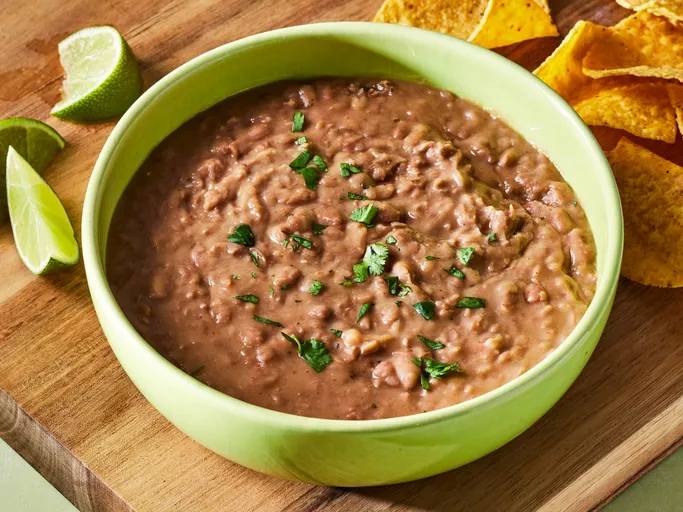

BEANS RECIPE

Description
Beans is an amazing meal for every Nigerian home this is made by cooking beans to a degree that it get so mashy. at this point you caqn decide to eat it all alone or get a nice bread to eat with it.
Ingredients
- Beans
- Water
- grounded pepper
- Onions
- Maggi
- Ground nut oil or palm oil
steps
- boil your beans for close to 1hour or 45mins as you desire
- add onions
- add your grounded pepper if you need to
- Add your maggi and an amount of salt suitable for the mixture
Go back